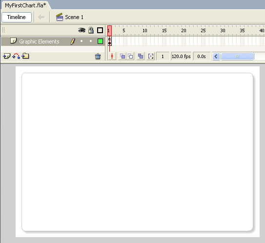
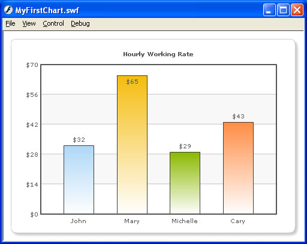

| FusionCharts and Flash > Overview | ||||||||||||||||||||
Starting FusionCharts v3, the charts can now be very easily integrated with your Flash movies and applications. If you're using Flash 8 (ActionScript 2), you can include the respective chart's class at design-time and then compile it with your application to form a single comprehensive unit. For Flash 9/CS3/CS4/CS5 or Flex, you can load the compiled chart SWFs from FusionCharts for Flex in your movies, as explained in the next sections. |
||||||||||||||||||||
| XML Data Usage | ||||||||||||||||||||
FusionCharts always needs its data in XML format. It CANNOT accept any other format of data including variables, arrays, recordsets etc. Even when using FusionCharts inside your Flash movies, you need to provide it XML data only. XML data can be easily created in your Flash movies either using string concatenation or using methods of the XML Object. You do not need to store data in physical XML files. You can build the XML data in Flash variables at run-time and then pass this to chart. So, even if you've your data in arrays, recordsets or remote database (that you access using your own Flash code), you can easily convert them to XML at run-time and then use FusionCharts with it. We won't be discussing XML data structure here, as that has already been discussed in "FusionCharts and XML" Section. You can find the Chart XML Sheet for each chart under "Chart XML Sheets" section. Here, we'll directly jump to see how to create a FusionCharts chart in your Flash application. We'll start with a very basic single chart application. |
||||||||||||||||||||
| Basic Example | ||||||||||||||||||||
For this example, we create a new .fla named as MyFirstChart.fla. We set the size of this movie to 500x350 pixels and set background as white. The code examples discussed in this section are present in Download Package > Code > FlashExamples. Now, before we code to create the charts, we need to set (install) the charts for use in this movie. Setting up the charts for use in your movie is very simple. You just need to copy com folder from Download Package > SourceCode folder into the folder in which you'll be placing your .fla file.Here, we're placing our .fla file in FlashExamples folder, and as such we copy the com folder here. Only FusionCharts Enterprise Plus License contains the source code. Now that the charts are set for use, let's get back to our Flash file. Rename the default layer as "Graphic Elements" and place an rounded-rectangle shape with shadow effect. Basically, we'll use this as the background of the chart. The idea is to show how easily FusionCharts can integrate with the graphical elements of your Flash movie. It should look something as under: |
||||||||||||||||||||
|  Now, create another layer and name it as "Actions". In its first keyframe, punch in the following ActionScript code: |
||||||||||||||||||||
/**
* This keyframe contains the Actions required to load a FusionCharts
* chart in your Flash movie.
*
*/
//You first need to include the following two files in your movie.
//These two files contain pre-loading functions and application
//messages for the chart.
//Note: If you're loading multiple charts in your Flash movie, you
//do NOT need to include these files for each each. You can put these
//lines in the main timeline, so that it gets loaded only once.
#include "com/fusioncharts/includes/LoadingFunctions.as"
#include "com/fusioncharts/includes/AppMessages.as"
//To create the chart, you now need to import the Class of the
//chart which you want to create. All charts are present in the package
//com.fusioncharts.core.charts (Download Package > SourceCode folder)
//If you're using multiple charts, you can import all the requisite
//chart classes in the main timeline of your movie. That ways, you
//wouldn't have to import the chart classes everytime you wish to use.
import com.fusioncharts.core.charts.Column2DChart;
// ------------- XML Data for the chart -------------- //
//FusionCharts necessarily needs its data in XML format.
//So, if you've data in arrays, forms, recordsets, etc., you
//first need to convert it into XML. Only then would you be able
//to use the charts.
//Here, we're hard-coding an XML data document for demo.
//In your applications, this XML data could be dynamically
//built at run time using string concatenation or XML
//Object.
//Generate the XML data. We hide the border of chart, set background
//alpha as 0 (for transparency) and then set palette to 2.
var strXML:String = "<chart showBorder='0' bgAlpha='0,0' palette='1' caption='Hourly Working Rate' numberPrefix='$'>";
//Add simple data for demo.
strXML = strXML + "<set label='John' value='32' />";
strXML = strXML + "<set label='Mary' value='65' />";
strXML = strXML + "<set label='Michelle' value='29' />";
strXML = strXML + "<set label='Cary' value='43' />";
strXML = strXML + "</chart>";
//FusionCharts chart classes accept XML data as XML Object
//and not XML String.
//So, if you've an XML string, first create an XML object from it
//and then pass to the chart. We do the same.
var xmlData:XML = new XML(strXML);
// --------------------------------------------------- //
// -------------- Actual Code to create the chart ------------//
//To create a chart, you first need to create an empty movie clip to act as chart holder.
var chartContainerMC:MovieClip = this.createEmptyMovieClip("ChartHolder",1);
//Now, instantiate the chart using Constructor function of the chart.
var myFirstChart:Column2DChart = new Column2DChart(chartContainerMC, 1, 450, 325, 20, 15, false, "EN", "noScale");
//Convey the XML data to chart.
myFirstChart.setXMLData(xmlData);
//Draw the chart
myFirstChart.render();
//Stop
stop();
|
||||||||||||||||||||
|
Let's get to the above code step by step. To include any FusionCharts chart in your Flash movie, you first need to include two files in your movie: com/fusioncharts/includes/LoadingFunctions.as and com/fusioncharts/includes/AppMessages.as. These files contain necessary pre-load functions and application messages for the chart. In your application, you can put this code in the main timeline, so that it gets executed only once. After this, we include the Chart Class file of the chart which we intend to plot. All Chart Classes are present in com > fusioncharts > core > charts folder. So, the package name of each chart class is com.fusioncharts.core.charts. Here, we're building a basic Column 2D chart, and as such the fully qualified class name is com.fusioncharts.core.charts.Column2DChart. Once the classes are imported, we set our focus to building the XML data for the chart. In this example, we're using a single series Column 2D chart. So, the XML structure has to be single series XML. We build the XML using string concatenation in the variable strXML. Here, we're hard-coding the XML data in this string variable. In your real world application, this data could come from a database, web service, recordset etc. All you would need to do is get the appropriate data and then encode it into XML using string concatenation or XML Object (though string concatenation is far easier to use and understand). Finally, we create an XML Object from this xml string, as FusionCharts accepts only XML Objects. Moving on , let's see how to build the chart now. Each FusionCharts chart needs an empty movie clip to build itself in. So, we create an empty movie clip named as ChartHolder. We store the reference to this movie clip in chartContainerMC variable. For demonstration purposes, we've created this empty movie clip in _level0 at depth 1. In your applications, you can create it nested within any movie clip. var chartContainerMC:MovieClip = this.createEmptyMovieClip("ChartHolder",1);
After that, we come to the main line of code - the line that instantiates the chart object. var myFirstChart:Column2DChart = new Column2DChart(chartContainerMC, 1, 450, 325, 20, 15, false, "EN", "noScale"); Here, we're creating an instance of Column2DChart class in our local variable myFirstChart. myFirstChart now stores the reference of the column 2D chart that we intend to display in this movie. To the constructor function of the chart class, we pass the following parameters (in sequential order):
|
||||||||||||||||||||
Note that the above parameters are same for all FusionCharts chart. This completes the initialization of your chart. You now need to convey the XML data to chart. To do so, you use the setXMLData() method of Chart Class as under: myFirstChart.setXMLData(xmlData); Here, xmlData refers to our XML Object which we had earlier created. Finally, you render the chart by calling render() method of the chart object: myFirstChart.render(); Now when you view this application, you'll get the following results. If you run this app, you'll see that the animations are a bit jerky. This is because your movie's default FPS (frames per seconds) is set to 12. FusionCharts uses time based animations as such it still completes the same animation path using 12 FPS, which results in the jerkiness. So, to make the animations smooth, you can increase the FPS depending on your application's requirements. |
||||||||||||||||||||
|  | ||||||||||||||||||||
|
Easy - isn't it? Well, this was just a beginning. You'll soon see how easy it is to embed powerful charting capabilities in your Flash applications now. We next see how to load data from external source. |